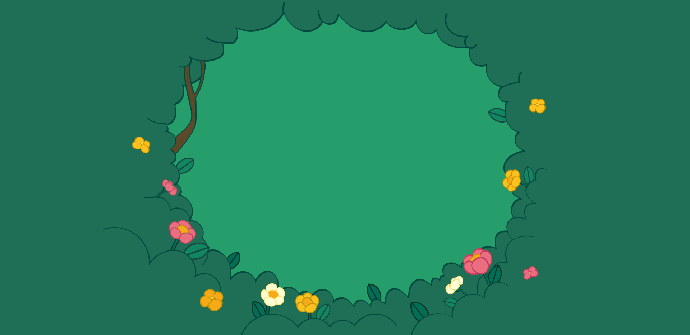
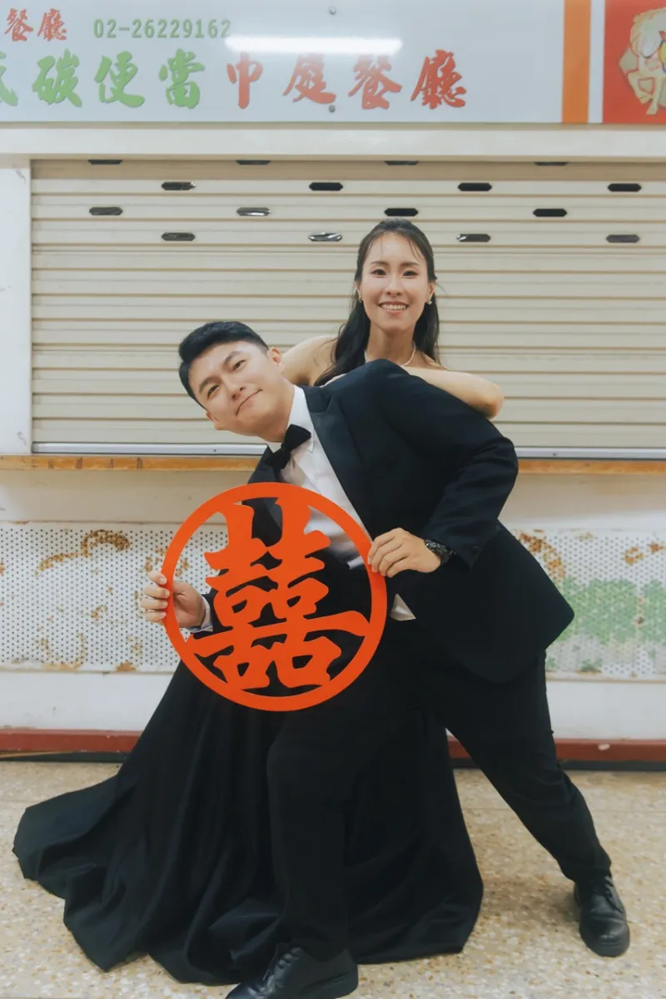
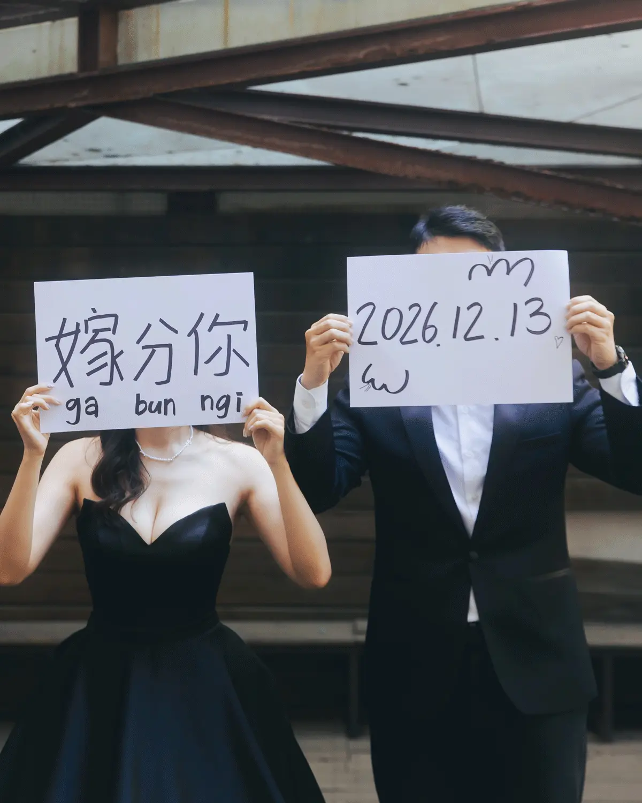
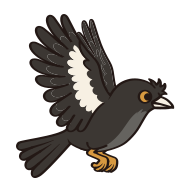
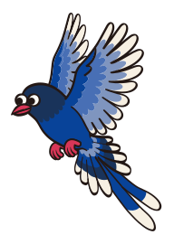
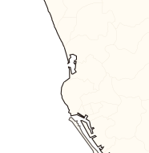

各位朋朋好。
國琳和芯敏愛情長跑多年，
為了能在彼此的手術同意書上順利簽名，
決定互許終身，成為彼此的法定家屬。
謝謝出現在我們生命中各個時期的朋朋們，
陪伴我們一同歡笑、成長。
現在，是時候來驗收成果了
希望大家一起來參↗加↘派↗對↘




📮 ，你的回函我們已經收到了！
✏️ 正在更正上一份回函，寄出時會標上【更正】


網路好像斷了，回函沒寄出去，再試一次吧！
寄出囉！
兩隻鳥已經把回函叼走了，我們收到會很開心的。
北部朋友的高雄小抄
難得南下，婚禮前後多留半天吧！

- 婚宴
- 景點
- 美食
- 高鐵
- 台鐵
- 捷運紅線
- 捷運橘線
- 環狀輕軌
第 1 日
- 搭高鐵至左營站，或搭台鐵至高雄車站
兩站都可以直接轉捷運紅線
- 捷運紅線到凱旋站，轉輕軌到凱旋武昌站
下車走路約 1 分鐘就到高雄親子遊樂園區（免費入園，週一、週二休園）
- 上午在親子遊樂園區放電
- 午餐在園區美食區或衛武營簡單吃
- 下午到衛武營都會公園散步、跑草地
旁邊的衛武營藝文中心有大片屋簷，可以遮陽躲雨
- 搭輕軌到夢時代吃晚餐
推薦 6 樓白玉樓（必比登推薦台菜），建議先訂位
- 回高雄當地旅宿
- 搭高鐵至左營站，或搭台鐵至高雄車站
兩站都可以直接轉捷運紅線
- 轉捷運至高雄小吃天堂鹽埕埔站吃午餐
Threads這篇很推。國琳推薦：阿財雞絲麵、鴨肉珍、塩埕鴨肉意麵
- 吃飽再去奶茶街買手搖
國琳推薦：双妃奶茶、松藝奶茶、天池冬瓜茶
- 走到駁二藝術特區看裝置藝術、逛市集
從鹽埕埔走路約 10 分鐘；也可以帶小孩去哈瑪星台灣鐵道館搭火車看模型（需門票）
- 看大港橋旋轉，到棧貳庫看海休息
- 搭輕軌到夢時代吃晚餐
推薦 6 樓白玉樓（必比登推薦台菜），建議先訂位
- 回高雄當地旅宿
第 2 日
- 搭捷運或台鐵前往橋頭車站
- 參加 黃曾府喜宴
- 結束後可移動到旁邊橋頭糖廠散步
- 快樂賦歸
第 1 日
- 搭高鐵至左營站，或搭台鐵至高雄車站
兩站都可以直接轉捷運紅線
- 轉捷運至鹽埕埔站附近中午用餐
Threads這篇很推。國琳推薦：阿財雞絲麵、鴨肉珍、塩埕鴨肉意麵
- 買杯奶茶，再去鹽埕第一公有市場逛市集
國琳推薦：双妃奶茶、松藝奶茶、天池冬瓜茶
- 至鼓山輪渡站或棧貳庫輪渡站，搭渡輪至旗津
- 走訪旗後山，賞燈塔、礮臺和海港風景
- 旗津廟前路享用晚餐
- 回高雄當地旅宿
第 2 日
- 搭捷運或台鐵前往橋頭車站
- 參加 黃曾府喜宴
- 結束後可移動到旁邊橋頭糖廠散步
- 快樂賦歸
高鐵左營站、台鐵高雄車站都可轉捷運紅線，市區還有環狀輕軌。營業時間以店家公告為準，出發前記得再查一下喔！